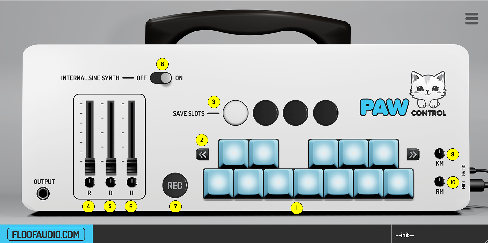
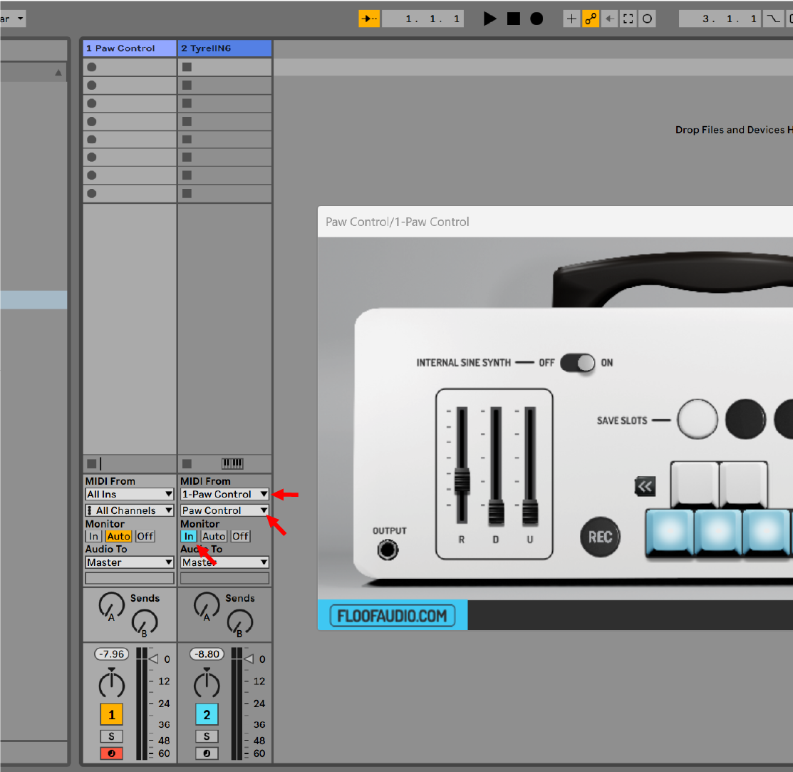
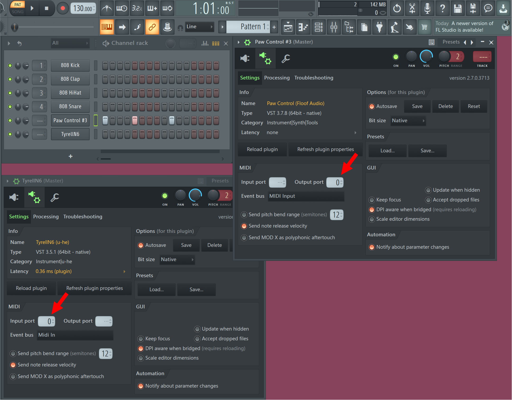
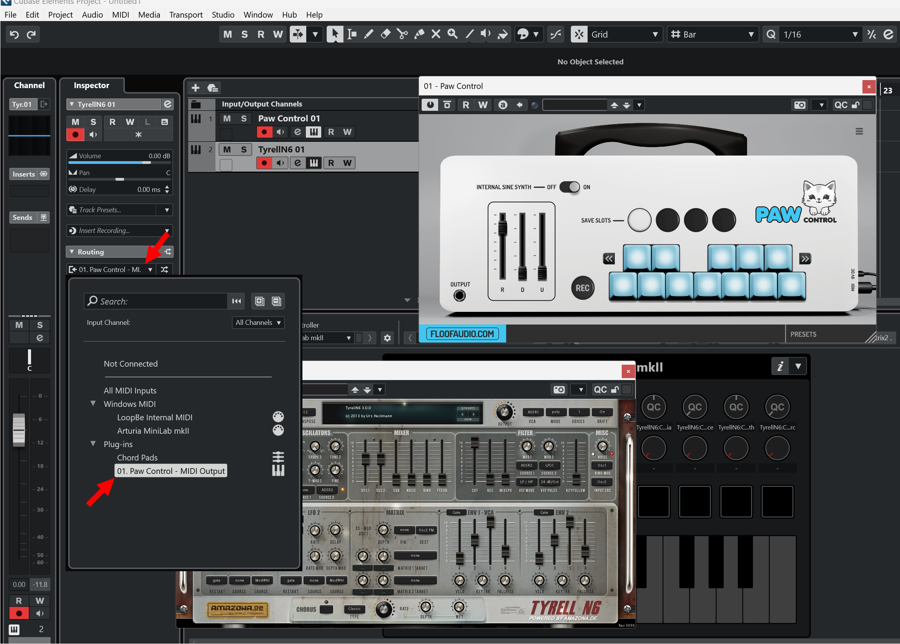
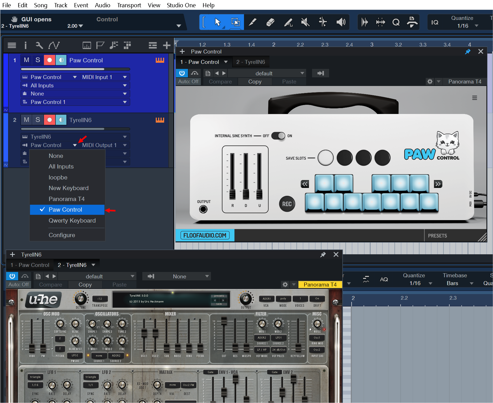
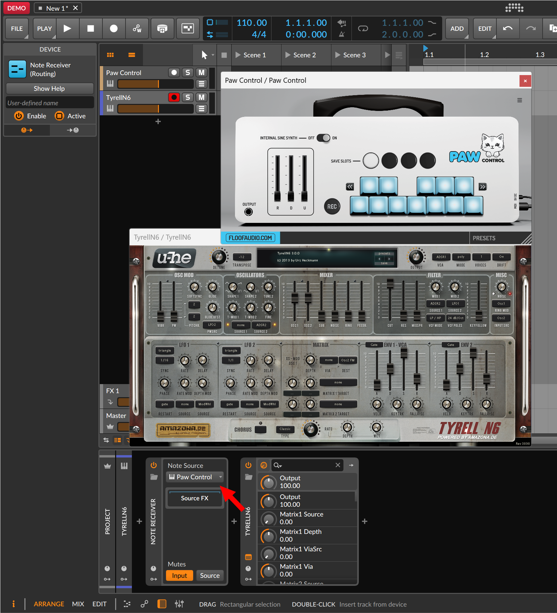

PAW CONTROL MANUAL
Paw Control is a VST instrument that lets you filter MIDI notes in creative ways.
It also includes a sine synth engine in so that you to hear the output right away.
The instrument is intended to be routed forward to any MIDI instrument of your choice. Read on for
the manual, installation guide and a guide for routing MIDI in various DAW's.

1. Key Selectors
These 12 key selectors represent the 12 notes of an octave, allowing you to select which MIDI
notes
are active. A blue keycap indicates an active note; white indicates inactive. The selection
applies to all octaves. The plugin highlights outputted keys in brown. If you press a note that is
inactive, the nearest active note will be played instead.
2. Key Selection Nudgers
These two buttons enable nudging all key selections one step to the left or right. With it you can
do quick
scale modulations. For instance, lets say you have selected active keys in the pattern of a C minor
scale. If you nudge it to the right it then
changes the scale to C# minor, and so forth.
3. Saveslots
These four buttons allow for quick switching between different key selections.
The active saveslot is highlighted in white.
Selections auto-save to the current slot when the key selection is changed.
If you ctrl+click on a saveslot, you copy the current selection to the saveslot you are
clicking on.
4. Random Range
This slider adds the possibility of randomness to your output midi. The randomness is confined
within the range set and within the current key-selection.
5. Octave Down Range
This slider adds the possibility of randomness of octaves below the input note. The higher the
slider the lower the octaves can go.
6. Octave Up Range
Similar to octave down range but adds the possiblity of octaves above the input note instead.
7. REC
This button has two functions.
Normal click: Allows you to MIDI learn key selection. The keys are all deselected at first, and this
mode is stopped by clicking again. You know the mode is active when the REC button is blinking.
CTRL+click: Allows you to MIDI learn saveslots to MIDI notes. You know the mode is active when both
the REC button and a saveslot button is blinking.
Simply input a midi note and the next saveslot starts blinking. Afterwards you will be able to
select saveslots with the midi notes you input.
If you only want to assign some of the keys, simply abort the mode by clicking again on the REC
button. If you want to delete all assignments, simply activate this mode and then press the REC
button again before inputing any midi notes.
8. Internal Sine Synth On/Off
Toggles the internal sine synth on or off. Turning the synth off may slightly lower the overall
latency.
INSTALLATION GUIDE
General installation notes
Installation of this plugin is as simply as placing the whole plugin folder ending in .vst3
in a directory
where your DAW host is able to locate it. An installer will replace this in the near future.
Windows
VST Plugins for windows are generally located in "C:\Program Files\Common Files\VstPlugins"
or
"C:\Program Files\VSTPlugins". However this is
dependable on the DAW host configuration.
Mac
This plugin is currently not supported on Mac as an AU plugin. We do plan to add support in
the future once we have sufficient funds to acquire a Mac computer.
Linux
If you are a Linux user, we are confident in your ability to figure this out, but the
general idea is the same as for windows.
DAW ROUTING GUIDE
Paw Control is fun on its own but even more fun when you route the output of it to other
instruments.
Below, you will find guides for routing MIDI from Paw Control to various DAWs.
ABLETON LIVE

Place Paw Control on one track and some other instrument on another track.
On the track containing the other instrument, under 'midi from' choose Paw Control in
the
list. Remember to click on the blue monitor in icon in order to hear that track.
FL STUDIO

Place Paw control on one track and some other instrument on another track.
In the plugin window of Paw Control choose on of the MIDI output ports.
In the plugin window of the other instrument, choose the same MIDI port as an Input.
CUBASE

Place Paw Control on one track and some other instrument on another track.
On the track containing the other instrument, under MIDI routing choose Paw Control in
the
list.
STUDIO ONE

Place Paw Control on one track and some other instrument on another track.
On the track containing the other instrument, select inputs and choose PawControl in the
list.
Remember to click on the blue speaker icon next to the record icon in order to hear that
track.
BITWIG

Place Paw Control on one track and some other instrument on another track.
On the track containing the other instrument, add a note receiver tool and select Paw
Control as the note source.
REASON
Currently, Reason does not support internal MIDI routing, making it impossible to route
Paw Control to another MIDI instrument within Reason.
We hope that the team at Reason will address this limitation in the future.
There might be workarounds with virtual midi busses, but that is outside the scope of
this guide.
LOGIC
This plugin is currently not supported on Mac and as an AU plugin. We plan to add
support in the future once we have sufficient funds to acquire a Mac computer.
A guide for Logic will then quickly follow.